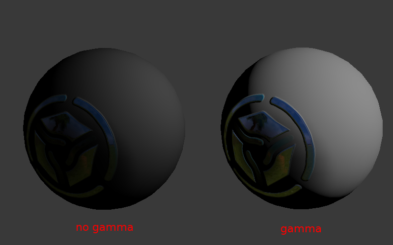

色彩管理¶
Gamma概述¶
伽马校正的实质是将图像亮度通道打包进8比特信息中。
标准（非HDR）图像总是存储在较暗的部分比亮的那些部分使用更多的比特编码的非线性颜色空间。这意味着，较大的RGB值对应于实际的光强度（物理量称为照度）的0.5 - 在简单的情况该值等于0.5 ^（1 / 2.2）= 0.73。
否则，光强的8位的信息将不足以进行编码。这将导致深色调的不正确渲染。例如，深色渐变会显得加强。
因此，网络浏览器和其他软件一样，也是在非线性空间观看和处理图像。但是，3D引擎和渲染器在线性空间的工作，这是表现现实世界中光的行为的唯一正确途径。例如，来自两个相同的灯的照度超过了从一个灯完全照度两倍。
无疑，在这种情况下8位的信息是不足够的。这可以从一些真实光源的近似照度值示表中清楚地看到。
描述 |
照度，光通量 |
|---|---|
夏季中午 |
17 000 |
冬季中午 |
5 000 |
日常天 |
1 000 |
在明亮房间 |
100 |
月圆夜 |
0.2 |
没有月亮的光 |
0.001 |
当 Color Management > Display Device > sRGB 选项为场景启用时，Blender工作于线性空间。材质的颜色和灯设置对应到相应的物理值。对于纹理图像（除法线贴图），则需要选择 Image > Input Color Space > sRGB 选项。在这种情况下，在渲染的时候执行自动图象解包（sRGB的 -> 直线）。
人类视觉和显示器¶
尽管人的视觉是非线性（人识别较暗光色调比亮的要好），进入眼睛的光仍然服从物理定律（参照灯的例子）。
在CRT显示器的亮度是根据施加到显示器的输入非线性地施加到显示屏的电压（由在显存中的色彩通道值确定的电压）。液晶显示器模仿相同的特性。但是这类显示器发出的光服从物理定律。例如将第二光源到虚拟场景会引起亮度加倍（在完美的情况）。
因此，人眼的感知特性是能够打包颜色通道的原因。同时，显示器的技术特征有二次伽马校正的意义。
伽玛公式¶
采用以下简化公式：
Vout = Vinγ
γ<1 - 打包伽玛值，γ> 1 - 拆包伽马。在最简单的情况 1/2.2 和 2.2 的值被分别使用。在下文中，用术语 “打包” (Linear -> sRGB) 和 “解包” (sRGB -> Linear) 的术语用来代替 “伽马校正”.
伽马在节点材质中¶
为颜色的节点¶
当纹理和顶点颜色用于色彩（不用于遮罩）拆包（sRGB -> 线性） 是必需的。纹理节点和几何节点的顶点颜色输出实现自动拆包。
需要注意的是纹理节点的alpha通道没有得到纠正。它的值是线性空间。
alpha合成¶
概述¶
物理正确的alpha合成是根据以下公式进行的 [source]:
\(C_o = C_a \alpha_a + C_b \alpha_b (1 - \alpha_a)\).
这个方程和经典的混合操作（又名凸包合成）不同，因为它在第二被加数具有 \(\alpha_b\) 乘数。因此渲染的时候不仅是原始像素的 \(\alpha_a\) 值应该是已知的用于alpha合成，而且要叠合的像素的 \(\alpha_b\) 也是一样。
公式在预乘的情况下颜色通道的 \(\alpha\) 值（称为预乘alpha） 就变成下面：
\(C_o = C_a + C_b (1 - \alpha_a)\).
最后一个公式用于计算出 \(\alpha_o\) 值：
\(\alpha_o = \alpha_a + \alpha_b (1 - \alpha_a)\).
将颜色通道预乘 \(\alpha\) 值允许保留2个乘法运算。更明显的是，衍生公式可以重复进行而不需要在每个迭代都去用 \(C_o\) 颜色值去除 \(\alpha_o\) 的值.

{kind=link}